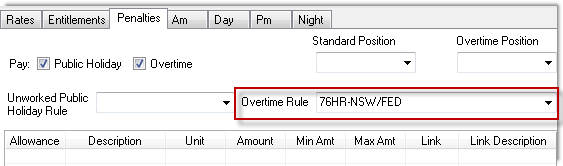
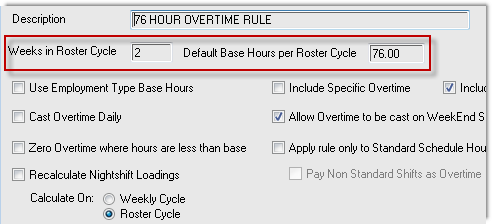
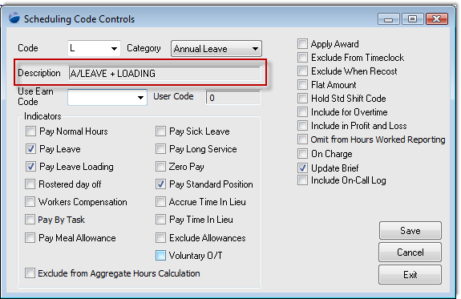
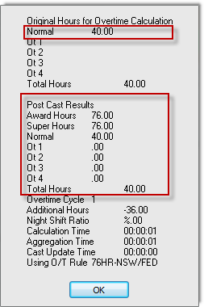
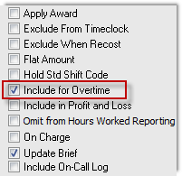
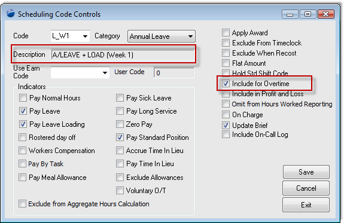
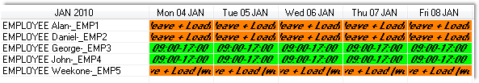
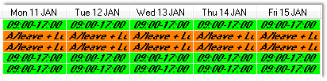

Home
Tutorial
Introduction
How will the cast overtime process treat annual leave in the first week of a 76 hour fortnight for a rotating shift worker.
|
Getting There:
[ N/A ]
|
Introduction
The requirement can best be displayed through a table:
| |
Week 1 |
Week 2 |
Requirement for Award Casting |
| |
|
|
|
| 1 |
40 hrs annual leave |
40 hrs normal time |
76 hours normal + 4 O/T |
| 2 |
40 hrs normal |
40 hrs annual leave |
40 hours normal + 40 hours A/L (annual leave) |
| 3 |
40 hrs annual leave |
40 hrs annual leave |
80 hours A/L |
| |
|
|
|
Top of Page
Overview
The approach we adopted to test how the 76 Hour rule will behave is to create the above rosters, cast the overtime and run the payrun reports to verify the results. Step by step follows:
- Using our test company, we've created 5 employees numbered EMP1 - EMP5, so that we can control their employment type and classification code.
- Define a 76 Hour overtime rule, and link it to the classification code of the above employees.
- Using the scheduling workbench, create two weeks of ad hoc shifts
- For each of the 3 lines of shifts above, assign 1 employee to each line. For the week in which the annual leave is to be noted, edit each shift, and using the shift type dropdown, change the shift type to "annual leave".
- Lastly, for each of the 3 employees, again through the scheduling workbench, cast their overtime over the two weeks, and verify the results.
Top of Page
Creating the control records
Before you create the sample employees, ensure that the classification code, 76 hour rule and scheduling code are all configured. For this example, they are as follows:
The classification code "Penalties" tab, has an overtime rule defined:

The overtime rule is a basic definition, as per the following image:

and finally, the scheduling code as per the following: 
Top of Page
Casting overtime
Just before proceeding to the cast overtime, ensure that the adhoc shifts for two full weeks is completed. On completion of setting the correct shifts via the scheduling code, still on the scheduling workbench - cast the overtime. Please refer to this documenting casting overtime if you require any assistance.
Top of Page
Review results
Reviewing the results shows that the 40 hours of annual leave, be it the first or the second week, did not affect the calculation, and resulted in the 40 hours not being drawn into the total hours worked.

Top of Page
Change the definition of the scheduling code
You will have noticed that the scheduling code has a checkbox, titled "Include for overtime", which sounds like what is missing from the calculation to bringing in the annual leave hours into the total hours calculation. So in making the change, we get: 
Having changed the definition, recast the overtime again for each of the employees.
The results this time, are that the annual leave hours are included in both the option 1 and 2, and each is receiving 4 hours overtime. We still don't have the required result, we have 1/2 the result.
Top of Page
Create a new scheduling code
We can see that the scheduling code is working, what is missing is the effect being directed at the week where the annual leave is in the first week. What we choose to do is to create a new scheduling code, as follows:

So, now we have two scheduling codes, one which asks that its hours be included in the total hours count, and one which does not have its hours included.
With this new configuration, the scheduling codes of the annual leave shifts for the first week for employee EMP1, has to be changed to the above scheduling code. With the scheduling code changed, we against cast overtime for the shifts.
Top of Page
Summary
The cast overtime process does its work over the period defined, and cannot be tuned to treat the same type of hours (annual leave) to be treated differently depending in which half of the 76 hour period they fall. The user however can control the hour type themselves as the time of setting the schedule (certainly prior to payroll), and the cast overtime can then do its work.
Using the scheduling codes is a better approach than editing a finished pay, because the system can correctly manage all accruals and entitlements generically.
Top of Page
Further information
Whilst we had the opportunity to write up the workings of the cast overtime process, we extended the above scenario to demonstrate how casting overtime does its work.
| |
Week 1 |
Week 2 |
Produced outcome |
| |
|
|
|
| 1 |
40 hrs annual leave |
40 hrs normal time |
40 hours A/L + 40 hours normal + no O/T |
| 2 |
40 hrs normal |
40 hrs annual leave |
40 hours A/L + 40 hours normal + no O/T |
| 3 |
40 hrs annual leave |
40 hrs annual leave |
80 hours A/L |
| 4 |
40 hrs A/L (inc hours) |
40 hrs normal time |
40 hours A/L + 36 hours normal + 4 hours O/T in the first week |
| 5 |
40 hrs normal |
40 hrs normal time |
76 hours normal + 4 hours O/T |
Top of Page
Explanation
We added a further two employees, so that each example could be shown against an individual employee.
The scheduling workbench over two weeks (use 14 day view):


And, finally the pre-payroll report to confirm the calculations for each of the scenarios outlined can be found at this pre-payroll link.
Top of Page
See Also
 PowerForce Controls PowerForce Controls
|